Corylus is the writing app I always wanted to make.
It keeps every chapter as a plain text file in a folder of your own, and it helps you revise what you write. It points out repeated words, runs of sentences with the same length or the same opening, and paragraphs that turn monotonous.
It has a distraction-free mode with background video and ambient sounds, so it's just you and the text. It works offline, and if you want, you can sync your projects with Dropbox, pCloud or Google Drive. It's in English and Spanish, for Mac and Windows. And it's free!
Download for Mac version 1.93.3 Download for Windows version 1.93.3
No account and no subscription. The Mac version needs Apple silicon (M1 or later). Corylus also runs on iPhone, iPad and Android, but those versions are not in the app stores yet.

Every chapter is a file on your disk
Most writing software for long work keeps your manuscript in a database, a bundle or a cloud account, and only that one application can open it. That works until the application stops being maintained, changes its price, or will not run on your next computer.
Corylus keeps each document as a plain Markdown file in an ordinary folder. That is the format it works in every day, so there is nothing to export. Open the folder while Corylus is running and your chapters are there, readable in any text editor. Corylus also keeps a search index, and rebuilds it from those files whenever it needs to.
If Corylus vanished tomorrow, your work would still be plain Markdown files in an ordinary folder, and any text editor opens them.
My novel.corylus/
├── settings.json
├── Manuscript/
│ ├── Chapter I.md
│ ├── Chapter II.md
│ └── Chapter III.md
├── StoryBible/
│ ├── Characters/
│ └── Places/
└── .corylus/
└── snapshots/
└── 01JCB7R2M8X4QYV3T9K5N6PZ0A/
└── 2026-11-02T09-14-22.md
The same chapter, twice.
On the left, Corylus. On the right, the same chapter as the file on your disk, which any text editor opens.
---
id: 01M7YJF3GANJDTJQV0Y5XGM49X
rev: {QSEEBQJA: 1}
title: "By the Lake"
synopsis: "Victor's childhood by the lake. Elizabeth arrives, and the family closes around her like a hand."
label: red
status: revised
---
I was born in Geneva, and my family is one of the most distinguished of that republic. My father had filled several public situations with honor and reputation, and he was respected by all who knew him for his integrity and his patience with public business.
No human being could have passed a happier childhood than myself. My parents were possessed by the very spirit of kindness and indulgence. We lived in a house by the lake, and in the summer evenings we rowed out until the mountains turned violet and the water held the last of the light.
…
Everything Corylus does
A tour of the whole app. All of it is in the free download. A few parts, such as grammar and the natural voices, are extra downloads you choose from inside Corylus.
Writing a book in pieces
In Corylus a novel is a tree of folders, chapters and scenes in the Binder, on the left. Every piece is a file of its own.
Continuous text
Select a folder, or a handful of chapters, and read them as one long page. You can edit there as well, and each chapter is still saved to its own file.

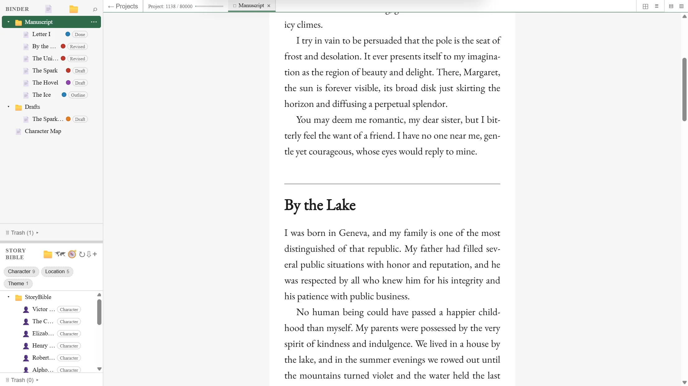
Comments
Select a passage and leave a note on it. Reply to it, resolve it or delete it. The comment follows its passage as you edit. Its text is kept in a separate file, so the chapter holds only an invisible marker where the comment sits.

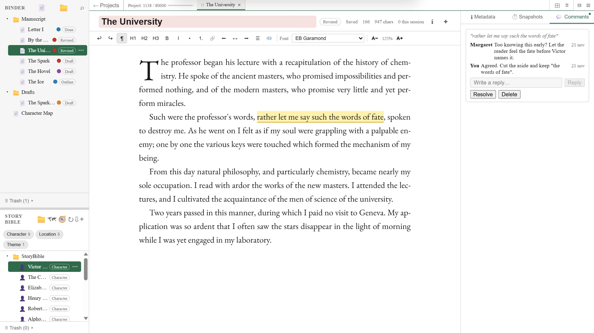
Word counts and targets
Give a chapter or the whole book a word target and watch the progress as you write, along with the words you have added this session. Project Statistics counts words, sentences and paragraphs, estimates pages and reading time, and lists the words you use most.

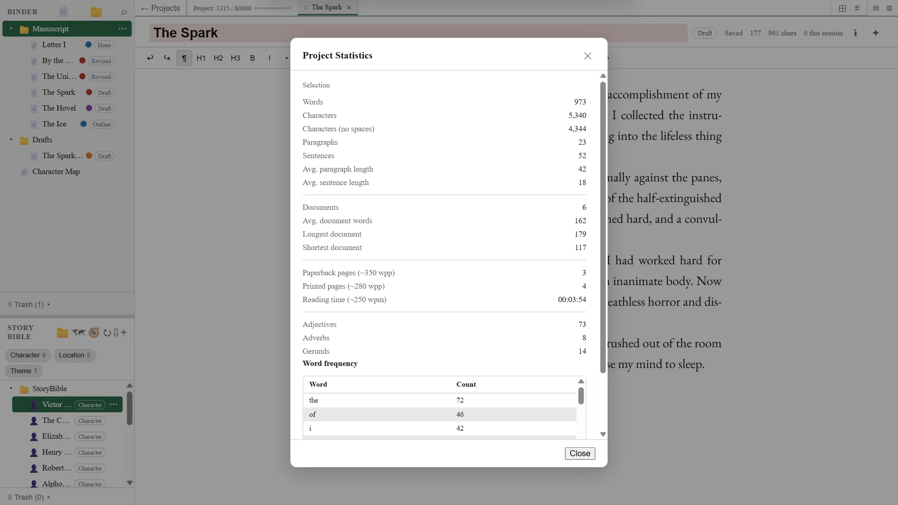
Binder, tabs and split panes
Drag chapters and scenes to put them in order. Open several at once in tabs, split the window to keep your notes beside a chapter, or pull a tab out into a window of its own.
Synopsis, label and status
Each chapter carries a synopsis, notes, a label and a status, edited in the Inspector on the right. They are stored at the top of the chapter's own file, where any text editor can read them.
Find and search
Find and replace inside a chapter, matching case or whole words if you want. Search the whole project for a phrase, with or without accents, and narrow the results by label, status or folder.
Dashes and quotes as you type
Two hyphens become a dash and three dots an ellipsis. Straight quotes curl as you type, and in a Spanish document they become « ». One undo gives you back exactly what you typed.
Seeing the shape of the book
The Corkboard and the Outliner show the same chapters from further away, in the Binder's order.
Corkboard
A folder's chapters as index cards in a grid, each with its title and synopsis, or its opening lines if it has no synopsis yet.

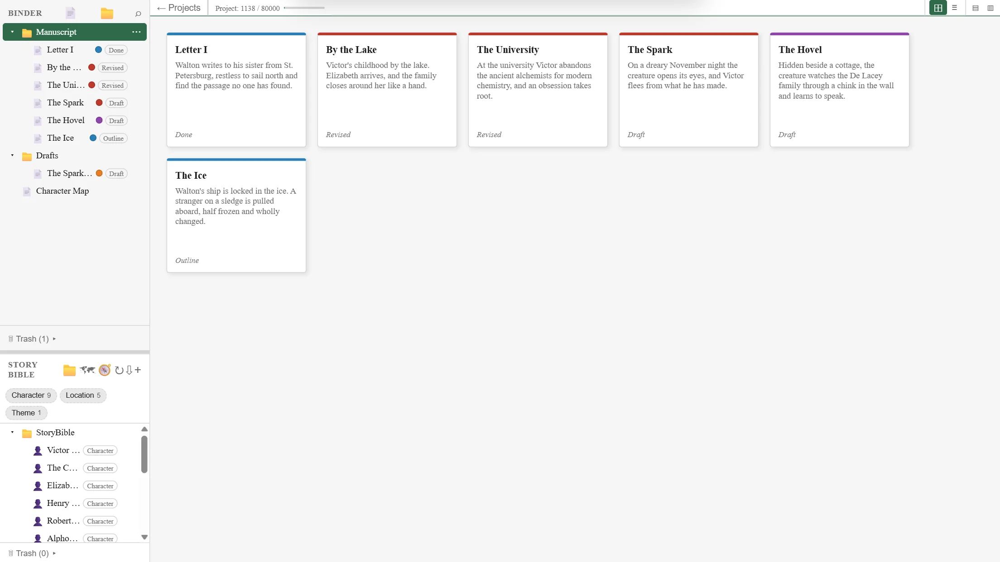
Outliner
The same chapters as a table with their title, synopsis, label, status and word count. Change any of them right there in the table.

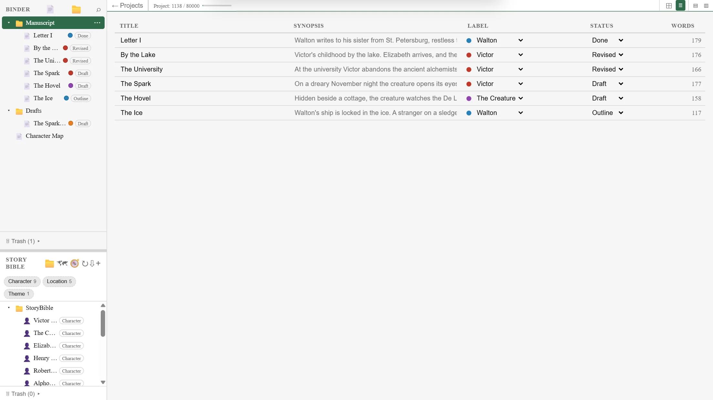
Methodology wizard
Pick a story structure, such as three acts, Save the Cat or the hero's journey, and Corylus sets it up in the Story Bible as a folder with one entry per beat. Mark each beat done and link the scenes that carry it. There are methods for characters, scenes, themes and worldbuilding as well.

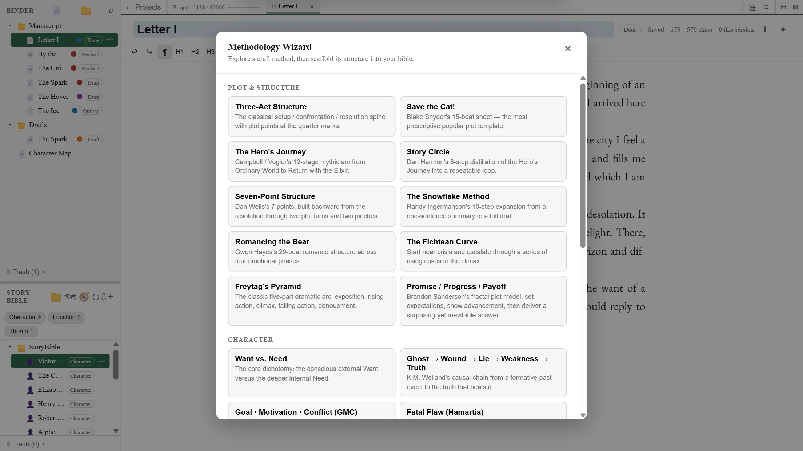
The Story Bible
Characters, places, objects, organisations, plots, scenes, themes, timeline events, lore and research. Each kind of entry has fields of its own, and every entry is a Markdown file in the project's StoryBible folder.
Entries with portraits
Give a character a portrait and fill in what matters: what they want and what they need, the wound, the lie they believe, the arc. Type [[ to link to any other entry by name. Links survive renames, and every entry lists the places that mention it.

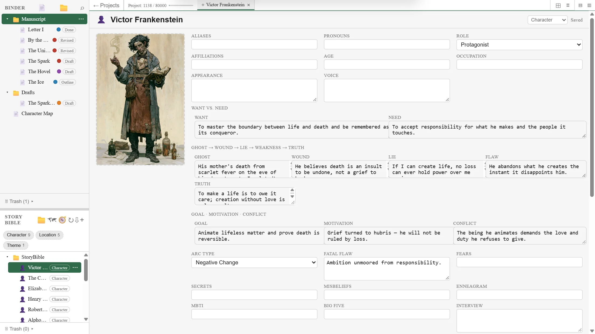
Relationships with both names
A relationship is written once and appears on both entries, and each end can have its own name: “creator of” from Victor, “created by” from the Creature. On a relationship map the lines are drawn from the entries themselves, so the map and the entries always agree. There are scene corkboards and mood boards for images too.

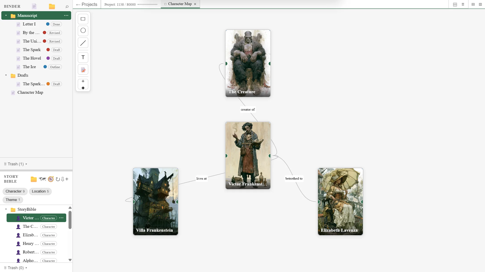
Notes you already have
Drop a Word, OpenDocument, RTF, HTML, Markdown or plain text file on the Story Bible and it becomes an entry, formatting and images included. Tag entries, nest tags such as faction/rebels, and filter the tree by them.
Help with revising
These checks mark the text and explain each mark when you hover over it. Every check has its own switch, so you turn on only the ones you want. They work in English and Spanish and run on your computer. Most need language data that downloads once, and Corylus offers it when you switch the check on.
Repeated words
Corylus marks a word that comes back too soon, and counts the forms of a word together: “forest” and “forests”, “walk” and “walked”. You decide how near is too near and which words never count.

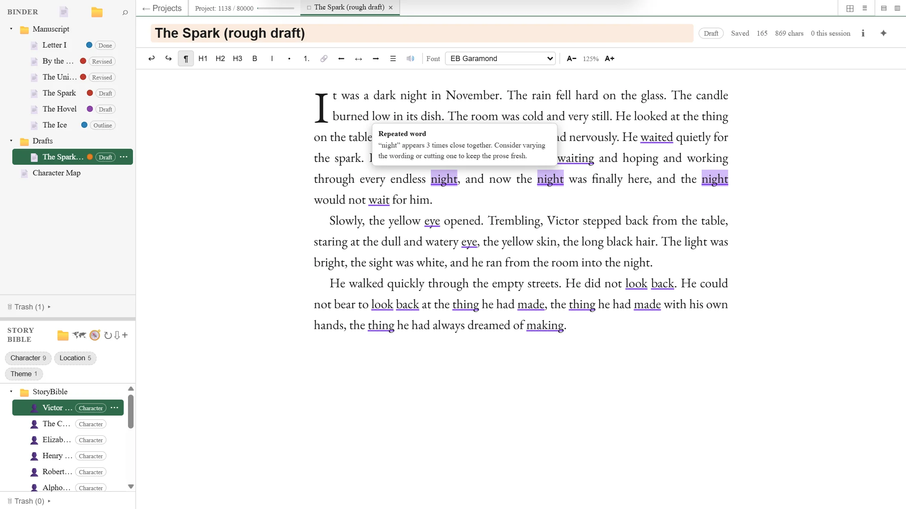
Monotonous sentences
Corylus can highlight three or more sentences in a row that open the same way or share the same build, stretches of sentences of nearly equal length, and paragraphs heavy with nouns. It also looks for stacked prepositions and filter words such as “she saw” and “he felt”, and in English for piles of “-ing” openers and of “as” and “but”.

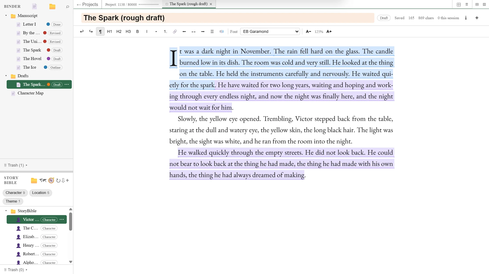
Adverbs, adjectives and gerunds
Highlight the adverbs, the adjectives or the gerunds to see where the prose leans on them. Project Statistics gives their density across the whole book.

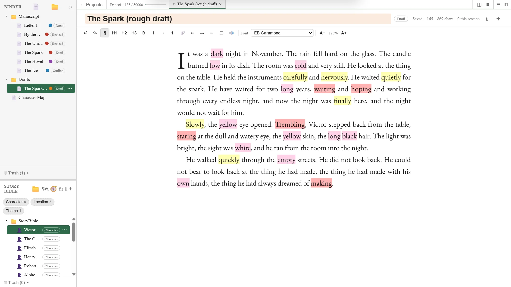
Accidental rhymes
Corylus underlines words close together that rhyme, the kind of echo you only notice when the text is read aloud. In Spanish it tells full rhyme from assonance, and you choose which to look for.

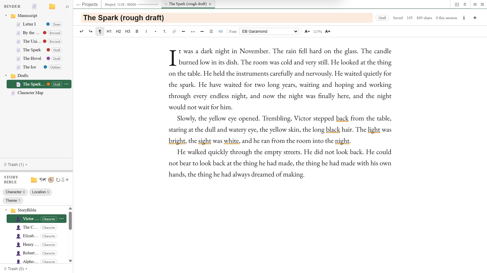
Synonyms on right-click
Right-click a word to see its synonyms and antonyms, and click one to put it in. A dictionary card lists them by meaning, with definitions. The thesaurus is built from Wiktionary, in English and Spanish.

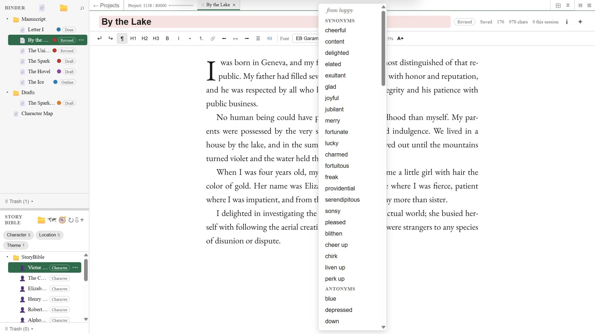
Grammar
Grammar and style checking by LanguageTool, in English and Spanish. It downloads once, then runs on your computer without a connection. It needs Java, and Corylus fetches a small Java runtime if your computer has none.

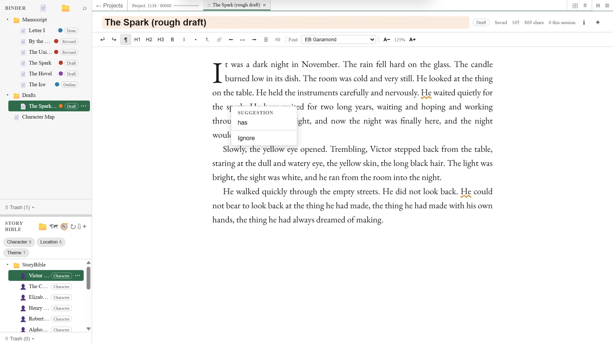
Read aloud
Corylus reads your text sentence by sentence, from the cursor or from a selection, and highlights the sentence it is on. Use your system's voices, or download natural voices for English and Spanish that run on your computer. You can also save the reading as a WAV file.

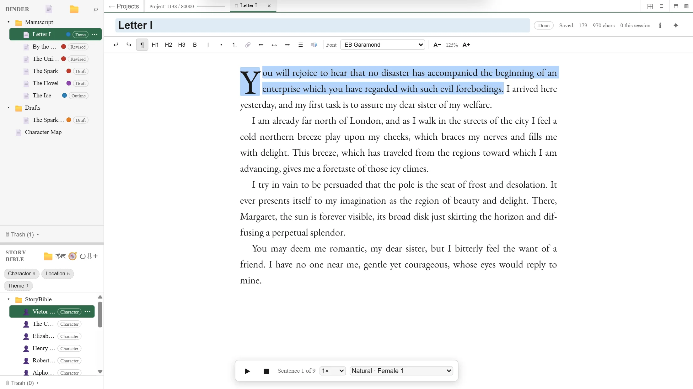
Spelling
Spell-checking with Hunspell, plus a dictionary in each project for your characters' names and the words you invent.
Just you and the text
Corylus can hide everything but the page, set a video behind it and play the rain while you write.
Distraction-free mode
One shortcut hides the Binder, the toolbar and the panels and takes the window full screen. Put a looping video or a picture of your own behind a translucent page and choose how much of it shows through. There is a gallery of backgrounds to download. Esc brings everything back.

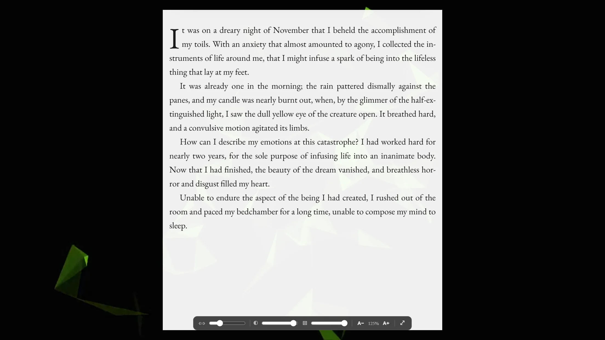
Ambient sounds
A mixer of background sounds: rain, waves, café chatter and many more, each at its own volume. Save the mixes you like, and play or stop them from the toolbar, in distraction-free mode too. The sounds are a single download.

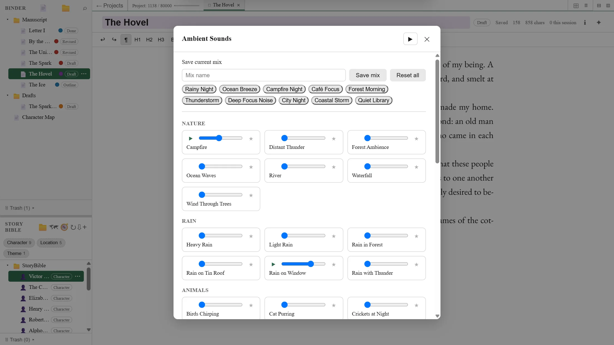
Themes and typography
Pick a colour theme for the window, among them Nord, Solarized, Dracula and two high-contrast ones, and a separate page colour: white, sepia, parchment or night. Typography presets set the font, spacing and indents, from modern block paragraphs to a double-spaced manuscript for submissions, and you can make your own. None of this changes your files.

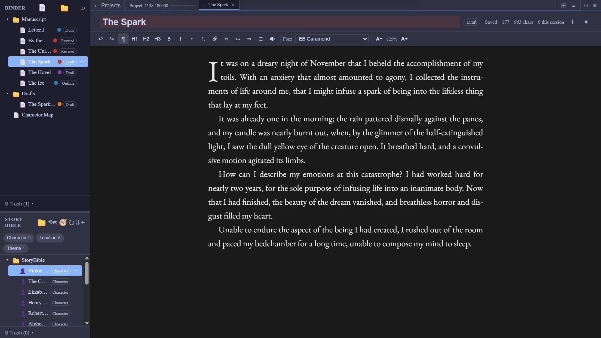
Focus and typewriter scrolling
Focus mode dims everything except the sentence or the paragraph you are in. Typewriter scrolling keeps the line you are typing in the middle of the screen.
Your files, and copies of them
Your project is a folder you chose. Corylus adds copies of its own, in ordinary formats you can open without it.
Snapshots
While you work on a chapter, Corylus keeps a copy of it every ten minutes, and you can take one yourself at any moment and give it a name. Compare any two to see what changed, or go back to one. Each snapshot is a plain text file inside the project.

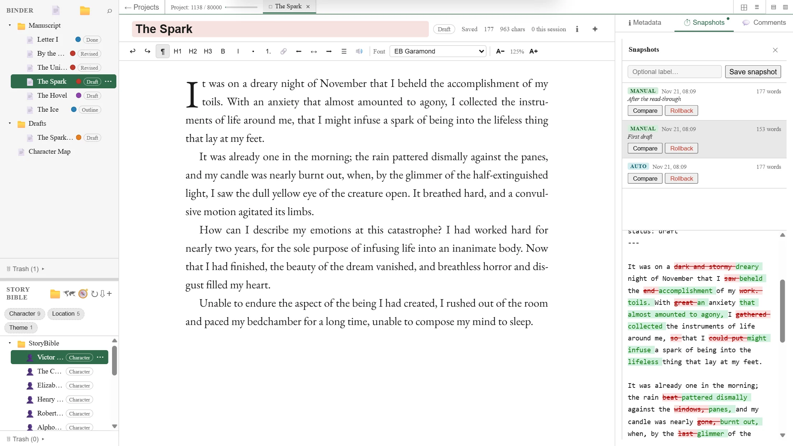
Backups
Corylus backs the whole project up as a ZIP file on a schedule you set and keeps the most recent ones. Settings lists them, and Restore puts the one you pick in a new folder, never over the files you have. A copy of each backup can go to your cloud account as well.

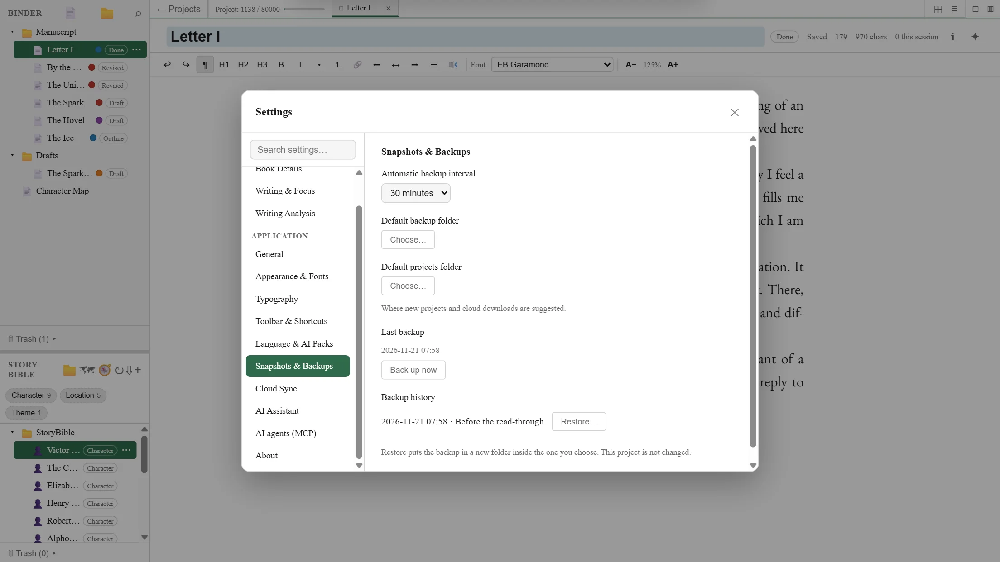
Sync with your own cloud
If you write on more than one computer, connect your own pCloud, Google Drive, Dropbox, OneDrive, Box or Amazon S3 account and Corylus keeps the project in step on each. When two computers change the same chapter, neither version is lost. Your files go straight to your account, with no Corylus server in between.

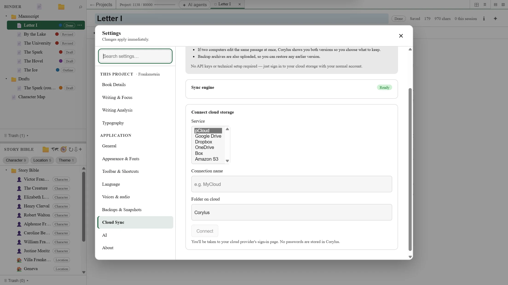
Moving in and moving around
Import a manuscript from Scrivener, Word, EPUB or HTML into a new project. Save a whole project as a single .cory file to take it to another computer, where a double-click opens it.
When the book is done
Compile to Word, PDF or EPUB
Compile puts the chapters together in Binder order. Tick the parts that go in, leave out chapters by status, choose a format and export a Word document, a PDF or an EPUB. Chapter titles, scene separators, headers, footers and page numbers are set in the same dialog. Corylus needs no other program to do it.

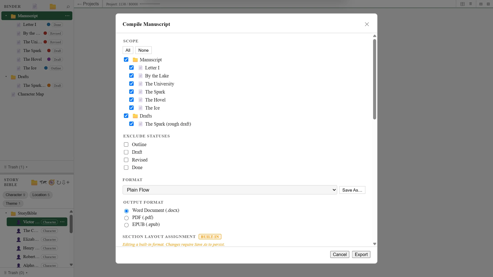
In English and Spanish
Spanish as a first language
The interface, spell-check, grammar, thesaurus, repetition and rhyme checks and the read-aloud voices all work in both languages. Each document has its own language, so a Spanish novel gets Spanish quotes, Spanish hyphenation and Spanish checks while the menus stay in English, or the other way round.

Optional extras that use AI
Two parts of Corylus use AI. Both stay off until you install them, and everything above works without them.
A local assistant
An assistant panel that answers questions about your own book, using a Qwen3 model that runs on your computer through Ollama. It is a large download, about 4 to 8 GB, and it cannot change your text.
AI apps, through MCP
If you use an AI app that supports MCP, such as Claude Desktop or Claude Code, you can let it read your project and, if you allow it, edit it. You choose per project: nothing, read only, ask before each change, or change freely. Corylus takes a snapshot before every change and keeps a log where you can undo any of them. What the app reads goes to that app's own service, under its terms.
What stays on your computer
No account
There is nothing to sign up for. Corylus has no server of its own, so there is nowhere for an account to live.
The AI runs on your computer
Grammar, the natural voices and the assistant are optional downloads. Once installed they run on your computer, and the text they check, read or answer about stays there.
What does go online
Sync, if you turn it on, sends the project to the cloud account you chose. Some system voices are online ones, and the voice list marks them “(online)”. Corylus checks for a new version at start-up, which you can switch off in Settings. Optional downloads come from their publishers' servers. If you connect an AI app such as Claude Desktop, it reads what you allow, project by project.
Open format
Markdown, with a short YAML header at the top of each file. Any text editor opens it.
Who makes it
I'm Ludo Bermejo, and I make Corylus on my own, with a lot of help from AI coding tools. I lead software teams for a living and write fiction. My science-fiction story “Azul” won the 2023 Premio Domingo Santos, awarded by the Asociación Pórtico and announced at HispaCon. Corylus is the app I built to write my own novels in.
Support Corylus
Corylus is free, and every feature is in the free app. One person builds it. Support on Ko-fi pays for the certificates that let it install without warnings and for the store accounts the phone versions need. After that, it pays for time.
What support pays for
€99 a year
The Apple Developer Program. It removes the “developer cannot be verified” warning on the Mac, and it is what puts the iPhone and iPad versions in the App Store.
About €253 a year
A Windows code-signing certificate, VAT included. Windows warns about any installer from an unknown publisher; a signed one builds trust with every download until the warning stops.
About €22 once
The $25 Google Play developer account, which the Android version needs to reach the store.
Then: time
Corylus is built in the hours left over from a day job.
Download Corylus
Download for Mac Download for Windows
Corylus already runs on iPhone, iPad and Android: the same app, opening the same project folders. I can't hand those versions out yet, because the App Store and Google Play need developer accounts I don't have yet. Paying for them is part of what support on Ko-fi is for.
Corylus is not notarized by Apple yet, so the first time you open it macOS says the developer cannot be verified. Right-click Corylus.app, choose Open, then Open again. On macOS 15 or later, go to System Settings, then Privacy & Security, and click Open Anyway. You only do this once per download.